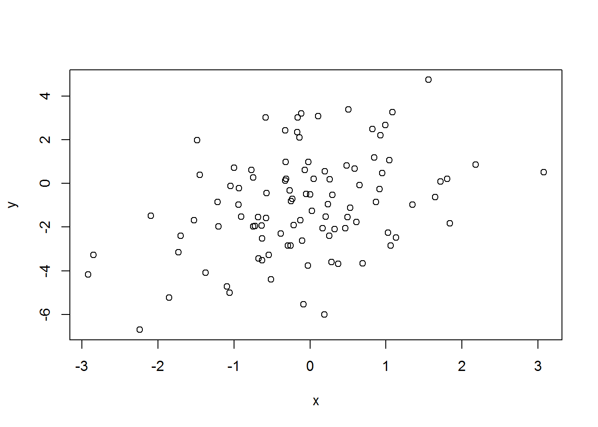
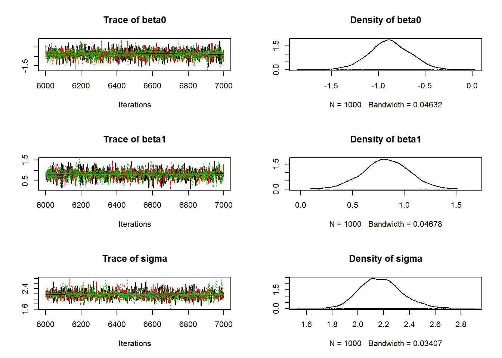

Key to Exercise I: Fitting a linear model using maximum likelihood and Gibbs sampling
The exercise can be found in: stats/exercises/lm.txt
Richard Chandler
Warnell School of Forestry and Natural Resources
University of Georgia
rchandler@warnell.uga.edu
Warnell School of Forestry and Natural Resources
University of Georgia
rchandler@warnell.uga.edu
Simulate a dataset
Here’s some R code to simulate \(x\) and \(y\):
set.seed(348720) # To make this reproducible
n <- 100
x <- rnorm(n) # Covariate
beta0 <- -1
beta1 <- 1
sigma <- 2
mu <- beta0 + beta1*x # expected value of y
y <- rnorm(n, mu, sigma) # realized values (ie, the response variable)Take a look:
cbind(x,y)[1:4,] # First 4 observations## x y
## [1,] -0.93295514 -0.2223842
## [2,] -0.02648071 -3.7537644
## [3,] -0.23166802 -0.7151488
## [4,] 1.64687862 -0.6357651plot(x,y)
Likelihood
The likelihood is the product of the \(n\) Gaussian densities: \[L(\beta_0,\beta_1,\sigma^2; {\bf y}) = \prod_{i=1}^n p(y_i|\beta_0,\beta_1,\sigma^2)\] where \(p(y_i|\beta_0,\beta_1,\sigma^2) = \text{Norm}(y_i|\mu_i,\sigma^2)\) and \(\mu_i = \beta_0 + \beta_1x_i\). The log-likelihood looks like this: \[\ell(\beta_0,\beta_1,\sigma^2; {\bf y}) = \sum_{i=1}^n \log(p(y_i|\beta_0,\beta_1,\sigma^2))\]
Here is an R function to compute the negative log-likelihood:
nll <- function(pars) {
beta0 <- pars[1]
beta1 <- pars[2]
sigma <- pars[3]
mu <- beta0 + beta1*x
ll <- dnorm(y, mean=mu, sd=sigma, log=TRUE)
-sum(ll)
}Minimize the negative log-likelihood
Now that we have data and a likelihood function, we need to find the parameter values that maximize the log-likelihood, or equivalently, minimize the negative log-likelihood. Before we do that, note that we could try the brute force approach of guessing parameter values, evaluating the likelihood, and then repeating until we can’t lower the negative log-likelihood anymore. For example:
# Guess the parameter values and evalueate the likelihood
starts <- c(beta0=0,beta1=0,sigma=1)
nll(starts)## [1] 397.9182## Another guess. This one is better because nll is lower
starts2 <- c(beta0=-1,beta1=0,sigma=1)
nll(starts2)## [1] 352.6342This is obviously a bad idea. Even with only three parameters, it would take forever to find the true maximum likelihood estimates (MLEs). Fortunately, there are many optimization functions in R. We’ll use optim, but nlm or nlminb would work just as well.
The optim function requires starting values and a likelihood function. If the likelihood function needs arguments other than the parameter vector, you can pass these to optim through the ... argument. If you want standard errors, you need to compute the hessian matrix.
fm <- optim(starts, nll, hessian=TRUE)
fm## $par
## beta0 beta1 sigma
## -0.8780081 0.8198882 2.1215936
##
## $value
## [1] 217.1089
##
## $counts
## function gradient
## 98 NA
##
## $convergence
## [1] 0
##
## $message
## NULL
##
## $hessian
## beta0 beta1 sigma
## beta0 22.2164990404 -2.0284602584 5.715464e-04
## beta1 -2.0284602584 23.7002731112 8.536745e-04
## sigma 0.0005715464 0.0008536745 4.443078e+01The par component has the MLEs. The value component is the negative log-likelihood at the MLEs. The convergence value should be 0. To obtain the SEs, we need to first invert the Hessian to get the variance-covariance matrix:
vcov <- solve(fm$hessian)
SEs <- sqrt(diag(vcov))Now, let’s compare our results:
mles <- fm$par # The maximum likelihood estimates
cbind(Est=mles, SE=SEs)## Est SE
## beta0 -0.8780081 0.2129932
## beta1 0.8198882 0.2062182
## sigma 2.1215936 0.1500231to results from lm:
summary(lm(y~x))##
## Call:
## lm(formula = y ~ x)
##
## Residuals:
## Min 1Q Median 3Q Max
## -5.2770 -1.4190 -0.1121 1.3182 4.3638
##
## Coefficients:
## Estimate Std. Error t value Pr(>|t|)
## (Intercept) -0.8780 0.2152 -4.081 9.16e-05 ***
## x 0.8199 0.2083 3.936 0.000155 ***
## ---
## Signif. codes: 0 '***' 0.001 '**' 0.01 '*' 0.05 '.' 0.1 ' ' 1
##
## Residual standard error: 2.143 on 98 degrees of freedom
## Multiple R-squared: 0.1365, Adjusted R-squared: 0.1277
## F-statistic: 15.49 on 1 and 98 DF, p-value: 0.0001549The results are very similar. The small differences are likely due to the use of maximum likelihood instead of ordinary least-squares, which is used by lm.
Joint posterior distribution and Gibbs sampling
The joint posterior distribution is proportional to the product of the likelihood and the joint prior distribution. The priors are usually taken to be independent, so in this case we have: \(p(\beta_0,\beta_1,\sigma^2)=p(\beta_0)p(\beta1)p(\sigma^2)\), which means that we can write the posterior like this: \[p(\beta_0,\beta_1,\sigma^2 | {\bf y}) \propto \left\{\prod_{i=1}^n p(y_i|\beta_0,\beta_1,\sigma^2)\right\}p(\beta_0)p(\beta_1)p(\sigma^2)\] where, as before, \(p(y_i|\beta_0,\beta_1,\sigma^2) = \text{Norm}(y_i|\mu_i,\sigma^2)\). Here are three possibilities for the priors: \(p(\beta_0) = \text{Norm}(0,1000000)\), \(p(\beta_1) = \rm{Norm}(0,1000000)\), \(p(\sigma) = \text{Unif}(0,1000)\). It’s easy to show that the influence of the prior is negligible for moderate to large sample sizes.
We can’t easily compute the joint posterior distribution analytically because it would require computing the normalizing constant in the previous equation. To do that, we would have to do a three-dimensional integration over the parameters. Fortunately, we can use MCMC to overcome the problem posed by intractable normalizing constants. Gibbs sampling is a type of MCMC algorithm that requires sampling each parameter from its full conditional distribution. The full conditional distribution for \(\beta_0\) is: \[p(\beta_0|\beta_1,\sigma^2,{\bf y}) \propto \left\{\prod_{i=1}^n p(y_i|\beta_0,\beta_1,\sigma^2)\right\}p(\beta_0)\] This is the probability distribution for \(\beta_0\), conditional on all the other parameters in the model and the data. We can sample from this distribution using the Metropolis-Hastings (MH) algorighm. For example, we can propose \(\beta_0^{*} \sim \text{Norm}(\beta_0, \text{tune}_1)\) and accept this candidate value with probability \(\min(1,R)\) where \(R\) is the MH acceptance ratio: \[R = \frac{\left\{\prod_{i=1}^n p(y_i|\beta_0^{*},\beta_1,\sigma^2)\right\}p(\beta_0^{*})p(\beta_0|\beta_0^{*})}{\left\{\prod_{i=1}^n p(y_i|\beta_0,\beta_1,\sigma^2)\right\}p(\beta_0)p(\beta_0^{*}|\beta_0)}\] Notice that the numerator and the denominator are made up of the product of the likelihood, the prior, and the proposal distributions. The likelihood and prior in the numerator are associated with the the candidate value. The proposal distribution in the numerator is the probability density associated with transitioning from \(\beta_0^{*}\) back to \(\beta_0\). The denominator has the likelihood and prior of the current values, along with the probability density associated with moving to the candidate from the current value of \(\beta_0\).
Sampling from the full conditional distributions of the other two parameters can be achieved in a similar fashion. Here are the other two full conditionals: \[p(\beta_1|\beta_0,\sigma^2,{\bf y}) \propto \left\{\prod_{i=1}^n p(y_i|\beta_0,\beta_1,\sigma^2)\right\}p(\beta_1)\]
\[p(\sigma^2|\beta_0,\sigma^2,{\bf y}) \propto \left\{\prod_{i=1}^n p(y_i|\beta_0,\beta_1,\sigma^2)\right\}p(\sigma^2)\]
A few things to note about the Metropolis-Hastings algorithm. First, if the proposal distribution is symmetric, you can ignore it when computing \(R\). Second, if you use conjugate priors, you can often sample directly from the full conditional distributions rather than use the MH algorithm. Here’s a link to a handy cheat-sheat for conjugate priors: https://en.wikipedia.org/wiki/Conjugate_prior#Table_of_conjugate_distributions. The last thing to mention about the HM algorithm is that you want to accept about 30-40% of the proposals, and you therefore have to ‘tune’ the algorithm to make it efficient. This means fiddling with the parameter \(\text{tune}_1\) shown above. It’s usually pretty easy to find good tuning values, but you can also use an adaptive phase to do this automatically.
A Gibbs sampler in R
lm.gibbs <- function(y, x, niter=10000, start, tune) {
samples <- matrix(NA, niter, 3)
colnames(samples) <- c("beta0", "beta1", "sigma")
beta0 <- start[1]; beta1 <- start[2]; sigma <- start[3]
for(iter in 1:niter) {
## Sample from p(beta0|dot)
mu <- beta0 + beta1*x
ll.y <- sum(dnorm(y, mu, sigma, log=TRUE))
prior.beta0 <- dnorm(beta0, 0, 1000, log=TRUE)
beta0.cand <- rnorm(1, beta0, tune[1])
mu.cand <- beta0.cand + beta1*x
ll.y.cand <- sum(dnorm(y, mu.cand, sigma, log=TRUE))
prior.beta0.cand <- dnorm(beta0.cand, 0, 1000, log=TRUE)
mhr <- exp((ll.y.cand+prior.beta0.cand) - (ll.y+prior.beta0))
if(runif(1) < mhr) {
beta0 <- beta0.cand
}
## Sample from p(beta1|dot)
mu <- beta0 + beta1*x
ll.y <- sum(dnorm(y, mu, sigma, log=TRUE))
prior.beta1 <- dnorm(beta1, 0, 1000, log=TRUE)
beta1.cand <- rnorm(1, beta1, tune[2])
mu.cand <- beta0 + beta1.cand*x
ll.y.cand <- sum(dnorm(y, mu.cand, sigma, log=TRUE))
prior.beta1.cand <- dnorm(beta1.cand, 0, 1000, log=TRUE)
mhr <- exp((ll.y.cand+prior.beta1.cand) - (ll.y+prior.beta1))
if(runif(1) < mhr) {
beta1 <- beta1.cand
}
## Sample from p(sigma|dot)
ll.y <- sum(dnorm(y, mu, sigma, log=TRUE))
prior.sigma <- dunif(sigma, 0, 1000, log=TRUE)
sigma.cand <- rlnorm(1, log(sigma), tune[3])
mu <- beta0 + beta1*x
ll.y <- sum(dnorm(y, mu, sigma, log=TRUE))
prior.sigma <- dunif(sigma, 0, 1000, log=TRUE)
prop.sigma <- dlnorm(sigma, log(sigma.cand), tune[3], log=TRUE)
ll.y.cand <- sum(dnorm(y, mu, sigma.cand, log=TRUE))
prior.sigma.cand <- dunif(sigma.cand, 0, 1000, log=TRUE)
prop.sigma.cand <- dlnorm(sigma.cand, log(sigma), tune[3], log=TRUE)
mhr <- exp((ll.y.cand+prior.sigma.cand+prop.sigma) -
(ll.y+prior.sigma+prop.sigma.cand))
if(runif(1) < mhr) {
sigma <- sigma.cand
}
samples[iter,] <- c(beta0, beta1, sigma)
}
return(samples)
}The function lm.gibbs is fairly long and dense. Take a look at the script stats/keys/lm-key-old.R to see an annotated function along with several other functions for making the algorithm much faster. These examples include the use of Rcpp and RcppArmadillo.
Here’s how to run the function:
out1 <- lm.gibbs(y=y, x=x, niter=1000,
start=c(0,0,1),
tune=c(0.4, 0.4, 0.2))The coda package makes it easy to look at the results:
library(coda)
mc1 <- mcmc(out1)
summary(mc1)##
## Iterations = 1:1000
## Thinning interval = 1
## Number of chains = 1
## Sample size per chain = 1000
##
## 1. Empirical mean and standard deviation for each variable,
## plus standard error of the mean:
##
## Mean SD Naive SE Time-series SE
## beta0 -0.8823 0.2306 0.007293 0.01449
## beta1 0.8195 0.2445 0.007732 0.01824
## sigma 2.1713 0.1678 0.005307 0.01243
##
## 2. Quantiles for each variable:
##
## 2.5% 25% 50% 75% 97.5%
## beta0 -1.322 -1.0248 -0.8839 -0.7279 -0.4266
## beta1 0.303 0.6608 0.8444 0.9826 1.2564
## sigma 1.831 2.0815 2.1724 2.2778 2.4836There are many things to take note of. The Mean is the posterior mean. The SD is the posterior standard deviation, which will be similar to the SE you would get from a classical analysis. The Naive SE and Time-series SE tell you about the Monte Carlo error associated with the posterior means. In Bayesian inference, point estimates aren’t the main object of inference. Instead, you want the entire posterior distribution, and the quantiles are helpful for summarizing the distributions. You can also view the posteriors (along with the trace plots) using the plot method in the coda package.
plot(mc1)
You can see that there is a short burn-in period that should be discarded. You can do that, and optionally thin the chain, using the window method:
mc1b <- window(mc1, start=101, thin=1)Other things you can do in the coda package include assessing convergence and looking at the rejection rate.
rejectionRate(mc1b)## beta0 beta1 sigma
## 0.4883204 0.4816463 0.6017798These should be closer to 0.65 to increase our effective sample size1. Let’s rerun the sampler with new tuning values and this time using 2 chains run in parallel:
library(parallel)
nCores <- 2
cl <- makeCluster(nCores)
clusterExport(cl, c("lm.gibbs", "y", "x"))
clusterSetRNGStream(cl, 3479)
out <- clusterEvalQ(cl, {
mc <- lm.gibbs(y=y, x=x, niter=1000,
start=c(0,0,1), tune=c(0.7,0.7,0.3))
return(mc)
})
mcp <- as.mcmc.list(lapply(out, function(x) mcmc(x)))Looking at the chains is the best way to assess convergence, but you can look at diagnostics too:
plot(mcp)
Close the connections
stopCluster(cl)Using JAGS
The first thing to do is create a text file with the model description. Mine is called lm-JAGS.jag, and it looks like this:
Now we need to put the data in a named list, choose the parameters we want to monitor, and create a function to generate random initial values.
jd <- list(y=y, x=x, n=n)
str(jd)## List of 3
## $ y: num [1:100] -0.222 -3.754 -0.715 -0.636 -0.522 ...
## $ x: num [1:100] -0.933 -0.0265 -0.2317 1.6469 0.2916 ...
## $ n: num 100jp <- c("beta0", "beta1", "sigma")
ji <- function() {
list(beta0=rnorm(1), beta1=rnorm(1), sigmaSq=runif(1))
}
ji()## $beta0
## [1] -0.3763193
##
## $beta1
## [1] 0.1359298
##
## $sigmaSq
## [1] 0.07151817Here’s how to compile the model with 3 chains, adapt, and then draw 5000 posterior samples for each chain.
library(rjags)## Linked to JAGS 4.3.0## Loaded modules: basemod,bugsjm <- jags.model("lm-JAGS.jag", data=jd, inits=ji, n.chains=3,
n.adapt=1000)
jc <- coda.samples(jm, jp, n.iter=5000)Take a look:
summary(jc)##
## Iterations = 1001:6000
## Thinning interval = 1
## Number of chains = 3
## Sample size per chain = 5000
##
## 1. Empirical mean and standard deviation for each variable,
## plus standard error of the mean:
##
## Mean SD Naive SE Time-series SE
## beta0 -0.8783 0.2189 0.001787 0.001793
## beta1 0.8207 0.2110 0.001723 0.002239
## sigma 2.1808 0.1586 0.001295 0.001697
##
## 2. Quantiles for each variable:
##
## 2.5% 25% 50% 75% 97.5%
## beta0 -1.3080 -1.0217 -0.8793 -0.7341 -0.4416
## beta1 0.4079 0.6814 0.8203 0.9621 1.2323
## sigma 1.8959 2.0684 2.1720 2.2833 2.5154Continue sampling where we left off.
jc2 <- coda.samples(jm, jp, n.iter=1000)Visualize
plot(jc2)
Discussion
The keys to other exercises either won’t be made publically available, or they won’t include so much explanation.
Although, it doesn’t really matter in this case because the Monte Carlo error rate is already very low↩